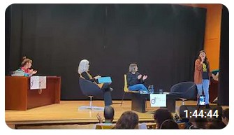
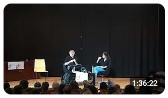
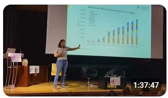
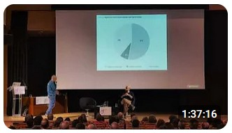

Charlas del ¡Decrece, co!
Charlas del ¡Decrece, co!
Aquí podéis encontrar todas las charlas que se llevaron a cabo en el ¡Decrece, co! Futuros habitables: propuestas desde el decrecimiento. ¡Esperamos que las disfrutéis!
Ponencias

Charla inaugural ¡Decrece, co!
Charla que inaugura el encuentro Decrece, co! en Zaragoza. Participan Marina Gros, Lucía López-Marco y Carmen Marcuello, tres mujeres cercanas y expertas que nos introducirán al decrecimiento desde tres perspectivas complementarias. Carmen Marcuello, especialista en economía social y cooperativismo, abordará las alternativas al actual sistema de consumo y producción, un modelo que pone en riesgo tanto la salud del planeta como la de las personas. Marina Gros, activista ecofeminista y experta en temas energéticos, analizará la situación energética actual y las posibilidades de transformarla desde el enfoque del decrecimiento. Por su parte, Lucía López Marco, experta en desarrollo rural y soberanía alimentaria, nos acercará al decrecimiento desde el mundo rural y la justicia alimentaria, ejes fundamentales para hacer frente al colapso ecosocial.

Decrecer para sobrevivir y para vivir: ética, comunidad y futuro, Jorge Riechmann y Carmen Madorrán
Introducción sobre la crisis ecosocial y la urgencia de replantear nuestro modo de vida imperial. ¿Qué necesitamos realmente para vivir bien en un planeta finito? ¿Qué opciones están abiertas ante nosotras/os, en este mundo de extralimitación ecológica y geopolítica militarista? Esta charla tuvo lugar en el encuentro Decrece, co! en Zaragoza en marzo 2026. Podéis encontrar más información en el programa y la sección de ponentes del evento.

Materias primas y energía, con Alicia Valero y “Decrecer sector agroalimentario”, con Enrique Muñoz
“Materias primas y energía – centros de datos y metales críticos” con Alicia Valero y “Decrecimiento y energía: implicaciones para el sector agroalimentario” con Enrique Muñoz. Estas charlas tuvieron lugar en el encuentro Decrece, co! en Zaragoza en marzo 2026. Podéis encontrar más información en el programa y la sección de ponentes del evento.

Cómo decrecer en la práctica: digitalización y su problemática, con Adrián Almazán y Luis González
Cómo llevar el decrecimiento del discurso a la vida real, mostrando que no es solo una crítica al crecimiento sino una propuesta para reorganizar la economía, el trabajo y los sectores productivos dentro de los límites ecológicos. La charla conecta los principios básicos del decrecimiento con sus efectos concretos en el empleo, la producción y la tecnología, y los aterriza en ámbitos clave como la agricultura y la digitalización, usando ejemplos cercanos. La idea central es que decrecer no significa colapsar ni volver atrás, sino producir y vivir de otra manera, con menos despilfarro, más sentido social y una relación más sana con el territorio y la energía.
En un periodo en el que se impone una economía basada en el crecimiento continuo, en esta última charla del encuentro Decrece, co! de Zaragoza (marzo, 2026) se hablará de cómo la ciencia y la ecología proponen una alternativa ineludible, el decrecimiento, y cómo lejos de ser algo de lo que lamentarse, el decrecimiento está asociado a los mejores escenarios humanos y a las más intensas y positivas motivaciones. Porque decrecer en lo económico y en lo energético, en nuestro consumo y en la producción desmedida, traerá prosperidad al poner el foco en lo que realmente nos hace sanos y felices.
Talleres
Charo Morán, de FUHEM y cooperativa GARUA, desglosa los materiales educativos para una Nueva Cultura de la Tierra, presentado un horizonte ecosocial fundado en siete ideas clave: decrecimiento material, justicia ambiental, biodiversidad, energías renovables, circularidad, y poner la vida en el centro. Plantea la necesidad urgente de un cambio cultural profundo que permita habitar el planeta de forma justa, sostenible y en equilibrio con los límites biofísicos.
Cristina García de “No es sequía, es saqueo” nos habla de los centros de datos en Aragón y plantea un debate sobre las consecuencias de estas megainfraestructuras. La implantación acelerada de Centros de Datos en Aragón va a hacer que nos convirtamos en el tercer mayor Hub de Centros de Datos de Europa, tras Londres y Frankfurt . Esta nube se nos vende como motor de creación de empleo cualificado con poco impacto. Sin embargo, los centros de datos son el sector con mayor crecimiento de emisiones y uno de los pocos cuyas emisiones crecen y en países como Irlanda, supusieron el 21% del consumo eléctrico de todo el país ¿Qué otras consecuencias tendrán para nosotros? ¿Realmente generarán empleo? ¿Qué están haciendo otros países?
Cristina García de “No es sequía, es saqueo” nos habla de los centros de datos en Aragón y plantea un debate sobre las consecuencias de estas megainfraestructuras. La implantación acelerada de Centros de Datos en Aragón va a hacer que nos convirtamos en el tercer mayor Hub de Centros de Datos de Europa, tras Londres y Frankfurt . Esta nube se nos vende como motor de creación de empleo cualificado con poco impacto. Sin embargo, los centros de datos son el sector con mayor crecimiento de emisiones y uno de los pocos cuyas emisiones crecen y en países como Irlanda, supusieron el 21% del consumo eléctrico de todo el país ¿Qué otras consecuencias tendrán para nosotros? ¿Realmente generarán empleo? ¿Qué están haciendo otros países?
En este taller se repasan los pasos para constituir comunidades energéticas, que son modelos colectivos donde ciudadanos, instituciones o empresas producen, gestionan y comparten energía renovable de forma local, democrática y sostenible.
Taller donde, por un lado, daremos ejemplos de cómo el enfoque de permacultura integra sistemas agrícolas y sociales inspirados en los patrones de la naturaleza para crear comunidades resilientes y regenerativas, y por otro, hablaremos sobre: ¿Quiénes son y cómo viven los hongos? Observaremos cómo se alimentan y relacionan con el resto de seres vivos. Aprenderemos como convertir la materia orgánica en alimento y medicina, a través de la descomposición para dejar una tierra más fértil.
Coro Cantatutti y cierre de Hugo Abad
Este vídeo recoge el breve concierto “Cambiemos las reglas” del coro Cantatutti de UNIZAR que sirvió de broche final del encuentro Decrece, co! que tuvo lugar en Zaragoza en marzo 2026. Al final, se incluyen las explicaciones de Hugo Abad, miembro del Foro Social Beyond Growth que nos explica en qué consiste este movimiento y se recogen las conclusiones del encuentro, a cargo de los organizadores.
Lecturas recomendadas
Si queréis continuar aprendiendo sobre decrecimiento, os dejamos aquí bibliografía sobre el tema, elaborada por el CDAMAZ (Centro del Agua y del Medio Ambiente, Ayto de Zaragoza).